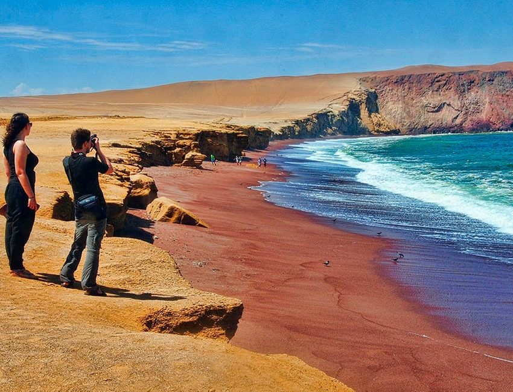
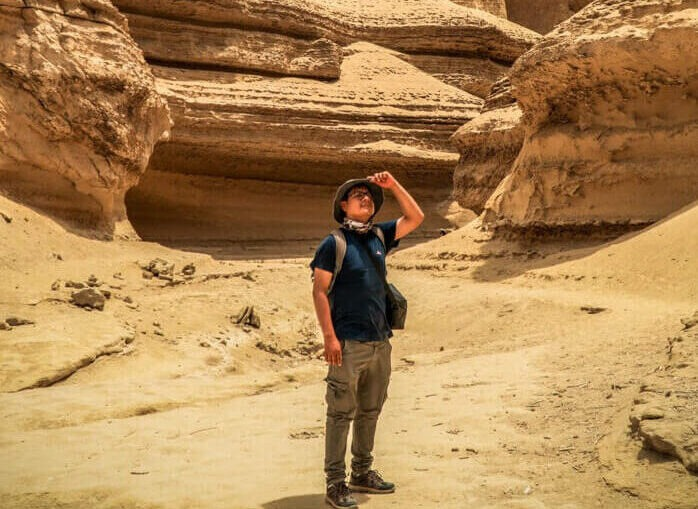
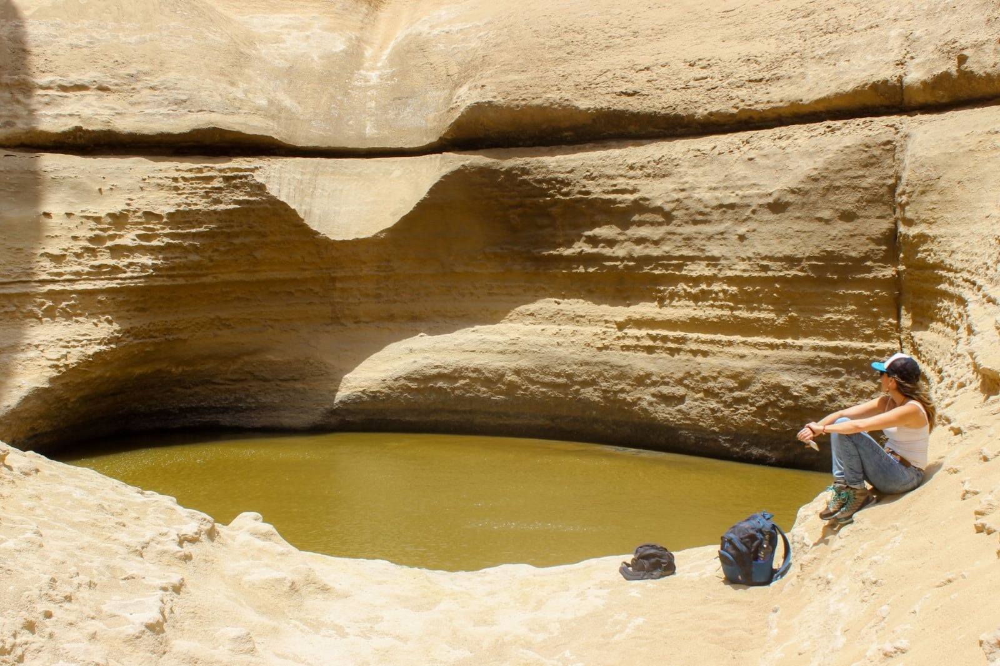
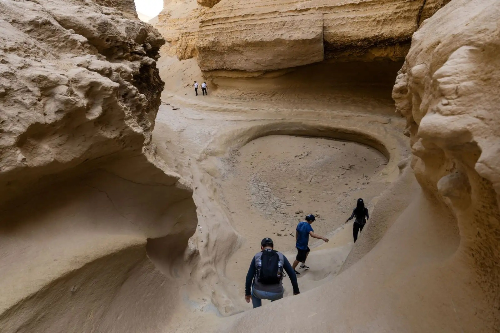

Detalles del Tour
Descubre una de las maravillas naturales más impresionantes y recientes de la región. Te llevaremos en vehículos todoterreno a través del árido desierto hasta llegar a esta inmensa formación rocosa. Realizaremos un trekking descendiendo a las profundidades del cañón para observar fósiles marinos milenarios y formaciones esculpidas por el agua hace millones de años.
Galería de Imágenes




Comentarios de Viajeros
Martín Gómez
Los paisajes parecen sacados de otro planeta o de una película de Marte. Excelente ruta de trekking, 100% recomendada.
Sofía Pineda
Fascinante. Es una ruta un poco larga en carro, pero vale totalmente la pena cuando ves la magnitud del cañón. ¡Lleven buenas zapatillas!